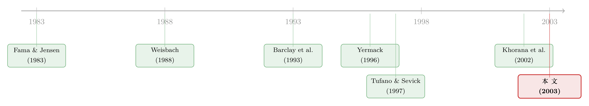

把董事会剥到只剩'看门狗'：一间叫封闭式基金的治理实验室
本文读的是 Del Guercio, Dann & Partch (2003, Journal of Financial Economics)：在封闭式基金这个"董事会只负责监督、不负责出谋划策"的干净设定里，作者发现那些更可能"有效独立"的董事会——规模更小、法定独立比例更高、董事薪酬更低、章程里写好了折价过大时的补救条款——系统性地对应着更低的费用率和更增值的重组决策。换句话说，监管者多年来对"独立董事"的押注，在这间实验室里基本得到了支持。
1 一个被剥得只剩"监督"的董事会
先抛一个让无数人头疼的老问题：董事会到底有没有用？
这个问题听上去简单，做起来却像在一团乱麻里抽线头。监管者深信不疑——美国证券交易委员会 (SEC) 一次次修法，把"独立董事"抬到公司治理的中心位置，仿佛只要独立董事够多、够独立，股东的利益就有人替他们盯着。可学术界给出的答案，却是一锅令人尴尬的夹生饭：有人发现独立董事比例更高的董事会，在更换 CEO、应对要约收购、采纳毒丸时确实更向着股东（Weisbach, 1988；Byrd and Hickman, 1992；Brickley et al., 1994）；也有人翻遍数据，说董事会构成和公司业绩之间根本没什么关系，甚至是负相关（Baysinger and Butler, 1985；Bhagat and Black, 1998）。
为什么会这样？一个常被忽略的原因是：在普通的工业企业里，董事会身兼两职。它既要监督管理层（monitoring），又要为公司的战略出谋划策（advising）。这两件事搅在一起，当你看到"独立董事多的公司业绩差"时，你根本分不清，是因为独立董事监督不力，还是因为这家公司本来就处境艰难、才不得不请来一堆外部专家。董事会的"监督"信号，被"咨询"这件事彻底污染了。
于是，一个自然的问题是：有没有一种公司，它的董事会只负责监督，几乎不需要出谋划策？
如果有，那它就是一间近乎完美的治理实验室。本文的三位作者给出的答案，是封闭式基金 (closed-end fund)。
2 为什么偏偏是封闭式基金
要理解作者的巧思，得先看清封闭式基金是个什么样的"混血儿"。
它一半像开放式基金，一半像工业企业。和开放式基金 (open-end fund) 一样，它的核心business就是把钱委托给一家投资顾问公司 (investment adviser) 去打理，付一笔费用。但和开放式基金不同的是，它不承诺按净值赎回——你想退出，只能在二级市场把份额卖给别人。正因为这道"赎回闸门"被焊死了，封闭式基金才会出现那个著名的、困扰了金融学半个世纪的现象：份额价格常年低于净资产价值，也就是折价 (discount)（Malkiel, 1977）。
这个差别看似技术性，含义却很深远。在开放式基金里，股东对管理层最有力的纪律手段，是 Fama and Jensen (1983) 所说的"用脚投票"——不满意就赎回，把资产从经理手里抽走，干净利落，无需和别人商量。可封闭式基金的股东没有这个权利。要想纪律一个不称职的封闭式基金管理层，股东只能像对付工业企业那样，发起一场需要集体行动的"硬仗"：要么逼基金回购份额，要么推动它开放化 (open-ending) 或清算。这一切，都得经过董事会。
这正是封闭式基金作为实验室的妙处：因为投资组合管理已经外包给了顾问公司，董事会几乎不必操心"该买哪只股票"这种战略问题；它的职责被压缩到一件事上——替股东盯紧那份和顾问签的合同。Isolating the monitoring role，这五个字就是全篇的方法论基石。
而且，董事会监督得好不好，在封闭式基金里是可观察的。它最重要的recurring职责，是每年审批投资顾问合同。这笔顾问费是绝大多数基金最大的开支，董事会谈得狠不狠、压得低不低，直接写在了基金的费用率 (expense ratio) 上。除此之外，董事会还得审批借款、份额回购、增发（rights offerings，即配股），以及重组——这些"特殊情形"决策，每一个都有明确的股东财富后果。
所以作者的识别逻辑其实朴素得有点优雅：它不是 DiD，也不是 IV，而是一组横截面关联——在控制了基金投资目标、规模经济和基金年龄之后，去看"被认为更有效独立的董事会特征"，是否系统性地对应着"对股东更友好的结果"。它的可信度，不来自某个外生冲击，而来自这个设定本身的纯净：一个行业、一种职责、一批结果直接可比的基金。
3 真正关键的一步：先把尺子磨准
但这里有一个容易被一带而过、却极其关键的环节——你拿什么当"董事会有效"的尺子？
作者选了费用率。这个选择本身不新鲜，开放式基金文献早已反复证明：费用率和股东收益是反向的，费用越高，到股东口袋里的钱越少（Jensen, 1968；Carhart, 1997）。可真正考验功力的，是怎么算这个费用率。
封闭式基金有一个工业企业才有、开放式基金没有的特征：它能发行优先股和债券这类优先证券 (senior securities)。而且它们是真的在用——样本里大多数封闭式基金的资本结构中都有债务或优先股，债务加优先股对普通股权益的比率，均值高达 0.47，中位数 0.49。这是什么概念？Barclay and Smith (1995) 报告，工业 Compustat 公司里只有 21% 发了优先股，价值仅占固定索取权的 5%。封闭式基金对优先证券的依赖，远超普通工业企业。
杠杆一旦进来，"费用率"这把尺子就会变得不可靠。年报里各家基金的费用率口径五花八门，有的把利息算进去，有的不算；分母用总资产还是用普通股权益，也莫衷一是。如果照搬年报数字，你比较的根本不是同一样东西。
于是作者做了一件笨功夫但极其重要的事：自己从年报里重算每一只基金的费用率。具体而言，从总费用里扣掉费用减免和托管返还，让费用反映股东真正承担的现金流出；对杠杆基金，用扣除利息后的口径，使费用率衡量的是"每一美元普通股权益对应的运营成本"，从而让有杠杆和没杠杆的基金可比；再剔除不归管理层控制的税（如所得税、汇回税），但保留那些因留存收益而被罚的消费税。
这一步换来的，是一把真正干净、可横向比较的尺子。重算之后，样本平均费用率 1.30%，中位数 1.21%；不出所料，国际型基金最高，债券型基金最低。
这是很多实证研究最容易栽跟头的地方：当被解释变量本身测量得含糊，再漂亮的回归也只是在噪声里做文章。本文把相当篇幅花在"先把因变量定义对"，这种克制，是一篇好实证论文的底色。
4 数据
铺垫到这里，数据本身反而简单。
作者的初始样本是 1995 年 CDA/Wiesenberger 年鉴里列出的 506 只封闭式基金，剔除 7 只双重目的基金后，最终拿到了 476 只基金的全部所需数据，它们来自 105 家投资complex（即由同一家顾问公司管理并销售的一组基金，如 Nuveen、Oppenheimer、Putnam），覆盖了 1996 年存续封闭式基金的 94%。这几乎是整个行业的普查，而不是抽样——这一点很重要，它让作者既能看大complex，也能看小complex，结论不至于被"只研究大基金"所扭曲。
观测单位是单只基金。平均一只基金有 $273.6 百万净资产，略超 7 岁，平均折价 6.97%（即平均溢价 -6.97%）。按目的分成五类后，市政债和债券型是最大的两类，股票型约占四分之一。资本结构上，82% 的杠杆基金是债券型，88% 持有优先股的基金是市政债型——杠杆的使用在行业里高度集中。
董事会变量则从 1996 年的委托书 (proxy statement) 里手工采集：董事会规模、法定独立董事比例、董事薪酬、是否自基金成立起就在任、是否分期改选 (staggered)、章程里有没有针对折价的补救条款，等等。
5 主要结果：独立，到底意味着什么
现在可以回答那个老问题了。结论分两层。
第一层，是费用率分析。控制住基金目的、规模经济和年龄之后，作者发现：费用率相对较低的基金，董事会规模更小、法定独立比例更高、董事薪酬更低，并且章程里写明了折价过大时的补救动作。这四个特征，恰恰是直觉上"有效独立"的董事会该有的样子——人少所以好协调、独立所以敢压价、拿钱少所以不必看顾问脸色、规则写在前面所以不必临时讨价还价。
更耐人寻味的是一个反转。
长期以来，有一种流行的怀疑：那些"自基金成立之日起就坐在董事会里"的独立董事，多半是顾问公司当年亲手挑进来的"自己人"，名义独立，实则忠诚于顾问而非股东。如果这个怀疑成立，那么这类董事越多，费用率应该越高才对。
数据却给了相反的答案：自成立起在任的独立董事，其存在对应的是更低的费用率和更高的基金溢价。换句话说，这些"老人"不是被豢养的忠诚派，反而是更尽职的看门人。作者用董事薪酬、以及"自成立起在任比例"这些变量，作为董事激励与"顾问对董事会潜在影响"的代理变量——它们捕捉到的，是法定独立标准之外的那一层"有效独立"。
（关于"董事薪酬本身就藏着监督的暗账"这条线索，可参见《老板的工资条，谁说了算？》。）
第二层，是折价/溢价分析。这里作者诚实地提醒：折价并非完全由董事会控制，但它毕竟是股东利益的一面镜子。结果显示，更高的溢价对应更小的董事会规模，这和费用率分析自洽——小董事会似乎确实更值钱，这一点也呼应了 Yermack (1996) 在工业企业里发现的"小董事会、高估值"。但请注意一个微妙之处：溢价与法定独立董事比例并不相关。
这正是本文最克制、也最有说服力的地方：它没有讲一个"独立董事无所不能"的童话。法定意义上的独立（满足 1940 年法案"非利益相关"的标准）和真正有效的独立，并不是一回事。前者和溢价无关，后者（小董事会、低薪酬、老资格独立董事）才和股东利益挂钩。这把"独立"这个被用滥的词，重新拆开了给你看。
（董事会"不是越大越好、越独立越好"这件事，在 IPO 公司的长期追踪里也有类似回响，见《董事会不是越大越好，也不是越独立越好》。）
6 当折价逼近：重组决策里的董事会
到这里，故事还差最后一块拼图。费用率衡量的是"年复一年的recurring监督"，但董事会真正的高光时刻，往往在那些"特殊情形"：当折价深到一定程度，开放化、清算、回购的提案被摆上桌面，董事会要不要动手？
作者用一个多项 logit (multinomial logit) 模型分析重组决策，把结果分成几类（重组成功、重组被否、通过关联交易商配股等），看董事会特征如何预测这些outcome。证据和费用率分析"largely consistent"：
- 更独立的董事会、以及所有董事每年改选（而非分期改选）的董事会，在面对巨大折价时，更可能推动重组。这两个变量对"成功重组的概率"和"基金折价水平"都有相当大的影响。
- 反过来，更大的董事会更可能反对重组提案，也更可能批准通过关联交易商进行的配股——而后者恰恰和"维持深度折价"或"溢价大幅下滑"联系在一起。
把这两段拼起来，一条主线就立住了：那些被识别为"有效独立"的董事会特征——小规模、真独立、年年改选、章程提前写好补救条款——既能在平时压低费用，又能在关键时刻替股东做出增值的重组。监督的"日常"和"非常"，在同一批基金身上，指向了同一个方向。
这一点之所以重要，是因为它绕开了"独立董事在工业企业里效果混乱"的老争论。Khorana et al. (2002) 此前已经发现，配股中那些顾问费大涨、或动用了顾问关联承销商的基金，溢价跌得最惨；Barclay et al. (1993) 则发现，大块持股反而和更深的折价相伴——管理层借助aligned的大股东，挡住了开放化的尝试。但这两篇都没有直接把董事会请上审判席。本文做的，就是把董事会这个被反复提及、却从未被正面检验的变量，钉在了证据上。
7 文献脉络
把镜头拉远，这篇论文站在三条河流的交汇处。
第一条河，是董事会的理论根基。Fama and Jensen (1983) 奠定了"所有权与控制权分离"下董事会作为内部监督机制的分析框架，后来 Weisbach (1988)、Byrd and Hickman (1992)、Brickley et al. (1994)、Cotter et al. (1997) 一路用 CEO 更替、要约收购、毒丸等重大事件，去检验独立董事到底向不向着股东——但答案始终是 mixed，Baysinger and Butler (1985)、Bhagat and Black (1998) 的怀疑声从未平息。Yermack (1996) 则贡献了那个广为人知的横截面事实：董事会越小，公司估值越高。

第二条河，是封闭式基金这个研究传统。Malkiel (1977) 之后，折价之谜成了行业的经典议题；Brauer (1984)、Brickley and Schallheim (1985) 研究开放化与折价的消失；Barclay, Holderness and Pontiff (1993) 把大块持股和折价联系起来；Khorana, Wahal and Zenner (2002) 则盯住配股里的代理冲突。这条河里全是"折价从哪来、怎么消失"的故事，唯独缺了"董事会在其中扮演什么角色"的正面回答。
第三条河，也是离本文最近的源头，是 Tufano and Sevick (1997)。他们分析了 1992 年最大 50 家complex的开放式基金董事会，发现费用更低的基金，董事会成员更少、独立比例更大、且董事在complex内其他基金董事会任职更多。本文几乎是把他们的问题搬到了封闭式基金里——但封闭式基金给了三样额外的东西：覆盖几乎整个行业（小complex也看得见）、样本年份 1996 早于 2001 年监管改革（不会被预期污染）、以及优先证券与反收购章程这些"像工业企业"的治理安排。于是本文的结论，得以推广到比基金更广的公司治理场景。
8 评论与延伸（Q&A + 研究方向）
(a) 几个可能的疑问
Q：封闭式基金的董事会"只监督不咨询"，这个前提真的成立吗？
大体成立，但不是 100%。投资组合管理确实外包了，董事会不必决定买哪只股票；但它仍要在valuation方法、服务商选择、以及重组时机上做judgment，这些多少带点"咨询"成分。作者的辩护是：相比工业企业，这点残余的咨询职能小到可以忽略，足以让"监督"信号从噪声里浮出来。这是一个程度问题，而非非黑即白。
Q：横截面关联，会不会只是内生性的幻觉？比如"好基金"既招来好董事会、又恰好费用低？
这是最该担心的威胁。Hermalin and Weisbach (2001) 早就指出，董事会是内生决定的制度，董事会特征和业绩可能由共同的、未观测的因素同时驱动。本文靠"控制目的/规模/年龄 + 单一行业"来缓解，但没有外生冲击，无法宣称因果。读这篇论文，要把结论读成"系统性的关联"，而不是"独立董事导致了低费用"。
Q：为什么"法定独立比例"和溢价无关，"小董事会、低薪酬"却有关？这不矛盾吗？
不矛盾，反而是本文的精髓。法定独立（满足 1940 年法案"非利益相关"标准）是一个粗糙的、容易被满足的门槛——凑够 40% 谁都会。而董事会规模、薪酬、老资格独立董事，捕捉的是法定标准之外那层"有效独立"。结论恰恰是：监管盯着的那条法定线，未必是真正起作用的那条线。
Q：那监管者把宝押在"独立董事"上，到底押对没有？
半对。把"独立"理解成一纸法定身份，押错了；把"独立"理解成"董事会真有能力、且不受顾问影响"，押对了。2001 年的新规把独立比例从 40% 提到 50%、要求独立董事自选自提、要求独立法律顾问，方向上是在往"有效独立"靠，本文的证据对此是支持的。
Q：'自成立起在任的独立董事更尽职'，这个反转可信吗？会不会是幸存者偏差？
值得警惕，但作者的逻辑有内部一致性：如果这些老董事真是顾问的忠诚派，费用率该更高、溢价该更低，数据却反过来。当然，幸存下来的基金可能正是治理较好的那批，这会让在任老董事"看起来"更尽职。这是一个无法在横截面里完全排除的隐忧。
Q：这套结论能搬到工业企业吗？
作者认为可以——正因为封闭式基金有优先证券、有反收购章程，它和工业企业共享了一部分治理结构。但要小心：工业企业的董事会承担了大量战略职能，"监督"和"咨询"重新缠在一起，本文最干净的那部分识别力就会流失。结论的外推，越靠近"纯监督"的场景越稳。
(b) 几个可能的研究问题与提案
1. 封闭式债券基金的治理 × 信用市场流动性
【经济故事】本文
82%的杠杆基金、88%的优先股持有者都是债券/市政债基金。封闭式债券基金本身就是公司债与市政债的重要持有人，它们的董事会若更有效、费用更低、更愿在折价深时回购，会直接改变这些基金在债券二级市场的买卖行为，进而影响标的债券的流动性。 【可行性】中。需要把本文式的董事会变量，与债券层面的成交数据（如 TRACE、MSRB）匹配。识别上仍是横截面关联为主，但可以利用 2001 年监管改革做一个准 DiD，比较受改革约束更紧的基金前后行为变化。doable，但匹配工作量不小。
2. 外资持有人会不会替代"好董事会"？
【经济故事】如果一只封闭式基金的份额被信息更灵、行动更狠的外资机构大量持有，这些持有人或许能直接施压管理层，部分替代董事会的监督职能。那么"董事会有效性"对结果的边际贡献，是否会随外资持股比例上升而递减？ 【可行性】中偏低。难点在于封闭式基金份额持有人结构的细颗粒数据较难获取，且外资持股本身内生于基金质量。若能找到一个外资准入的外生变化（如指数纳入），可改善识别。
3. 章程里的"折价补救条款"是不是一种可信承诺？
【经济故事】本文发现费用低的基金，章程里更可能写明"折价过大时触发清算/开放化投票/回购"。这类条款本质是一种事前承诺。一个自然的问题是：写了条款的基金，事后折价的波动是否真的更小、更快收敛？还是说条款只是"好基金"的标签，从不真正被触发？ 【可行性】高。条款可从委托书手工读取，折价是公开可得的时间序列。可做事件研究：在折价首次穿过条款阈值前后，比较有/无条款基金的折价路径与重组概率。识别相对干净，数据也够。
4. 把 Yermack (1996) 的"小董事会溢价"在纯监督场景里重新称重
【经济故事】Yermack 在工业企业里发现小董事会对应高估值，但那里董事会身兼监督与咨询，小董事会可能牺牲了咨询能力。封闭式基金几乎不需要咨询，于是能把"小董事会到底是因为监督更利落、还是因为咨询更弱"这两种机制分开。 【可行性】高。本文样本已具备，只需把董事会规模与溢价/费用率的关系，和工业企业benchmark做结构化对照。属于在现有数据上深挖，doable。
9 参考文献
- Barclay, M., Holderness, C., Pontiff, J. (1993). Private benefits from block ownership and discounts on closed-end funds. Journal of Financial Economics 33, 263–291.
- Barclay, M., Smith, C. (1995). The priority structure of corporate liabilities. Journal of Finance 50, 899–917.
- Baysinger, B., Butler, H. (1985). Corporate governance and the board of directors: performance effects of changes in board composition. Journal of Law, Economics, and Organization 1, 101–124.
- Bhagat, S., Black, B. (1998). The uncertain relationship between board composition and firm performance. In: Corporate Governance: the State of the Art and Emerging Research. Oxford University Press, London.
- Brauer, G. (1984). Open-ending closed-end funds. Journal of Financial Economics 13, 491–507.
- Brickley, J., Coles, J., Terry, R. (1994). Outside directors and the adoption of poison pills. Journal of Financial Economics 35, 371–390.
- Byrd, J., Hickman, K. (1992). Do outside directors monitor managers? Evidence from tender offer bids. Journal of Financial Economics 32, 195–222.
- Carhart, M. (1997). On persistence in mutual fund performance. Journal of Finance 52, 57–82.
- Cotter, J., Shivdasani, A., Zenner, M. (1997). Do independent directors enhance target shareholder wealth during tender offers? Journal of Financial Economics 43, 195–218.
- Del Guercio, D., Dann, L., Partch, M. (2003). Governance and boards of directors in closed-end investment companies. Journal of Financial Economics 69(1), 111–152.
- Fama, E., Jensen, M. (1983). Separation of ownership and control. Journal of Law and Economics 26, 301–325.
- Hermalin, B., Weisbach, M. (2001). Boards of directors as an endogenously determined institution: a survey of the economic literature. NBER Working Paper 8161.
- Jensen, M. (1968). The performance of mutual funds in the period 1945–1964. Journal of Finance 23, 389–416.
- Khorana, A., Wahal, S., Zenner, M. (2002). Agency conflicts in closed-end funds: the case of rights offerings. Journal of Financial and Quantitative Analysis 37, 177–200.
- Malkiel, B. (1977). The valuation of closed-end investment-company shares. Journal of Finance 32, 847–859.
- Tufano, P., Sevick, M. (1997). Board structure and fee-setting in the U.S. mutual fund industry. Journal of Financial Economics 46, 321–355.
- Weisbach, M. (1988). Outside directors and CEO turnover. Journal of Financial Economics 20, 431–460.
- Yermack, D. (1996). Higher market valuation of companies with a small board of directors. Journal of Financial Economics 40, 185–211.